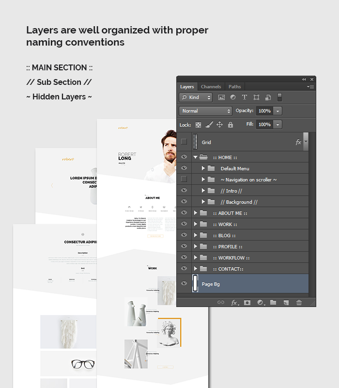
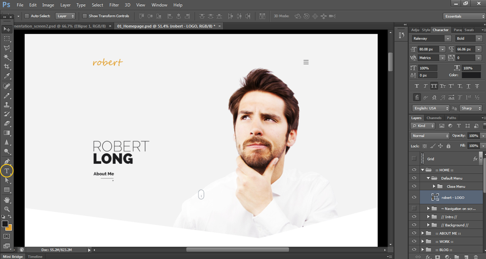
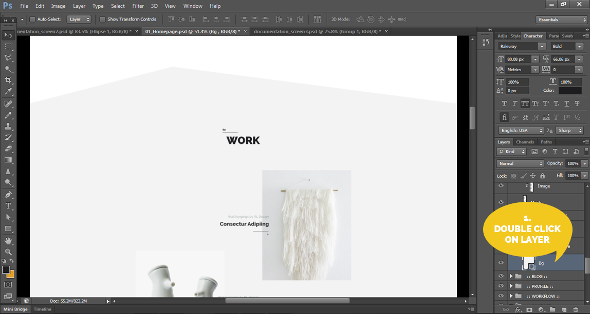
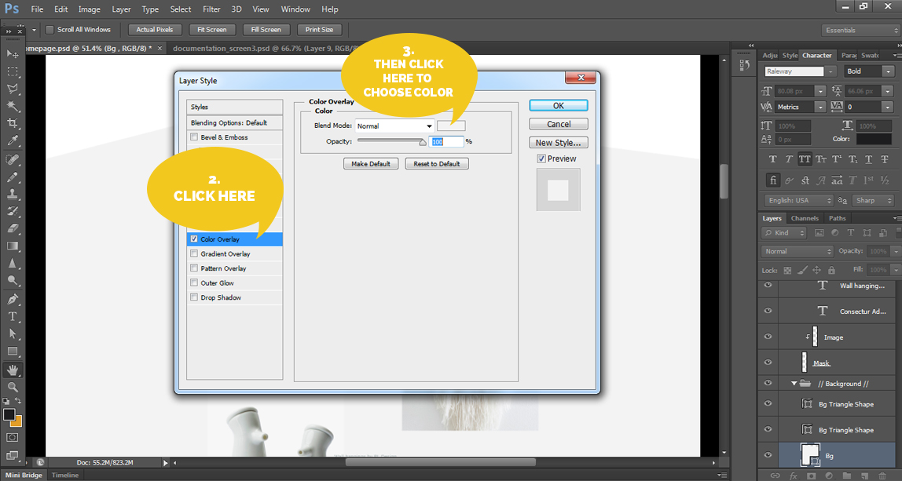
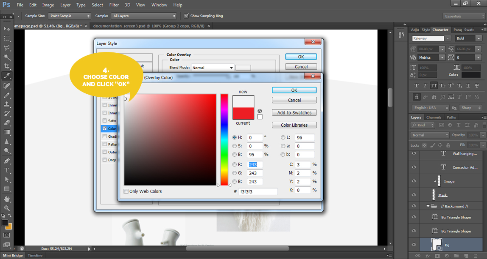
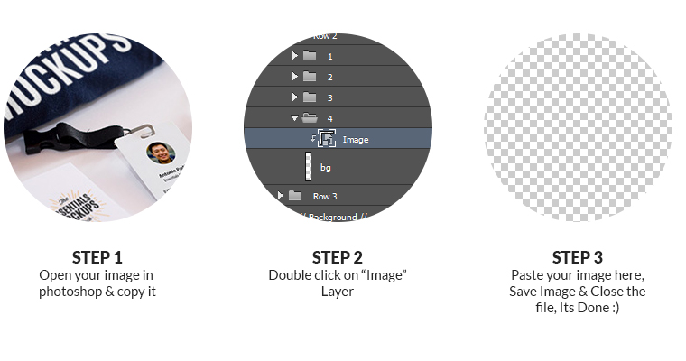

Created:05/07/2015
By: Webduck
Email: webduck.design@gmail.com
First of all, thank you for purchasing my psd template! If you have any questions that are beyond the scope of this help file, please feel free to email via my user page contact form here. Thanks so much!
You should find 12 of the following psd file in the download pack:
All layer inside the psd files are grouped & well arranged as mentioned below image:

Here are some basic steps for editing in this psd template. First of all I recommend to installing fonts to your system font folder before editing the PSD template. Font name and download link mentioned here
Editing the text or logo:

Open Any Homepage.psd file in photoshop.
Click on the text "T" tool in "tool panel" and write your brand name by create new layer
Note:Follow the same steps for any other text editing also.
---
How to Change Color:
Step 1: First double click on particulared elements to change color

Step 2: Than choose Color Overlay from Layer Style & click on Color Blend Mode as mentioned below:

Step 3: Choose the color what you want and than click on "ok" btn. its done :)

Change color for any elements is very easy for text, icon or background shape.
Note:You can follow the same steps for any other elements like text, icon etc.
---
How to place images using smart object:
You can easily place any image or screenshot of your work in psd template using smart object tool. exvample given below :
Step1
Open your image & copy it
Step 2
Dubble click on " Image" Layer.
Step3
Paste your image here. Save Image & Close the file. Its Done :)

I've used the following images, icons, fonts or other files as listed:
Credits:
http://graphicburger.com/
http://graphicburger.com/simple-line-icons-webfont/
http://unusualwhite.tumblr.com/archive
www.shutterstock.com
http://photodune.net/
---
Icons:
http://graphicburger.com/simple-line-icons-webfont/
---
Fonts:
RALEWAY
http://www.fontsquirrel.com/fonts/raleway
Once again, thank you so much for purchasing this psd template. As I said at the beginning, I'd be glad to help you if you have any questions relating to this theme. No guarantees, but I'll do my best to assist. If you have a more general question relating to the template on ThemeForest, you might consider visiting the forums and asking your question in the "Item Discussion" section.
Webduck